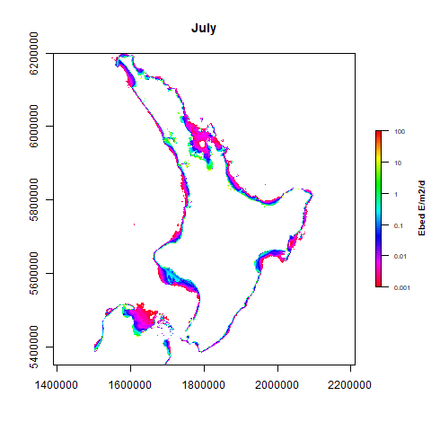
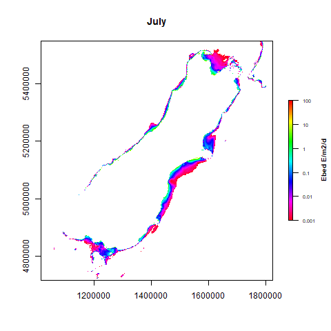

Laura E Queen
Wellington, Aotearoa - New Zealand·
lauraqueen411@gmail.com -
Laura.Queen@niwa.co.nz
 0000-0003-0457-1735
0000-0003-0457-1735Kia ora, ko Francois tōku ingoa! I am a PhD Student at the University of Canterbury (UC) in Christchurch, New Zealand. My main research interest is marine ecology, which is about how marine species interact between them and with their environment creating marine ecosystems. I am also interested in using new technology such as satellite and drone imagery in coastal ecology. I am part of the Marine Ecology Research Group (MERG)/Te Puna Rangahau Rauropi Moana at UC as well as the Marine Biogeochemistry group at the National Institute of Water and Atmospheric Research (NIWA). I am swinging between Wellington and Christchurch, but currently living in Wellington.
Thesis Project in Video Sometimes a quick video is better than a long text. So check the video I have made for the 2020 Visualise Your Thesis competition in the local heat of my University. Thesis Project in a few words More precisely in my project, I am investigating the availability of light for coastal ecosystems overall New Zealand, especially underwater forests. I am making use of the remote sensing of light via satellites and drones as well as optical modelling and in-situ measurements. The knowledge gained from these new technologies helps me developping methods to efficiently monitor the light environment around the coasts. I am furthermore interested in how a change in the light environment drives valuable communities to shift towards alternative ones. The reason is that these shifts are usually accompanied with a loss of services that the previous state of the ecosystem was providing us. Long story short, this is about understanding what we can potential loose by continuing changing our marine environment and more importantly, what can we do to protect what we benefit from. As an example, there are amazing and very valuable underwater forests around New Zealand. These forests are mainly dominated by kelp species, which are macroalgae that can grow BIG depending on the species. Associated with these underwater forests are many other species, some of economical interest such as the rock lobster or the pāua, the local abalone. Unfortunately and so are the forests in land, the kelp forests are locally and globally declining due to different factors including marine heat waves, storms and waves or sedimentation. The goal of my study is to investigate how a change of the light availability at the bottom of the sea is influencing the valuable underwater forests. So a big part of my project is to use satellite data to estimate the amounf of light reaching the seabed or seafloor. This is important as the light reaching the bottom of the sea will then be available for underwater forests. The good thing about using satellite data is that they have been collecting data for a few decades now (depending on the satellite itself), so we can have an idea if there has been more or less light for the underwater forests these past decades. We can also investigate why. The gifs below show of the average daily light reaching the seabed for every months, estimated by satellite and for the North and South Island of New Zealand. The blue/purple colours mean almost no light whereas the green/yellow/red colours mean potentially enough light to sustain photosynthesis and productive underwater forests.

